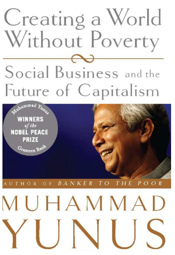

返回主页
Creating a World Without Poverty

Creating a World Without Poverty: Social Business and the Future of Capitalism
Muhammad Yunus
Muhammad Yunus, a native of Bangladesh, is the founder and managing director of Grameen Bank, a pioneer of microcredit, an economic movement that has helped lift millions of families around the world out of poverty. Yunus and Grameen Bank were the recipients of the 2006 Nobel Peace Prize.
Rabindranath Tagore (泰戈尔)1861年5月7日，泰戈尔生于印度西孟加拉邦(West Bengal )加尔各答(Calcutta)。泰戈尔的家庭属于商人兼地主阶级，是婆罗门种姓，在英国东印度公司时代财运亨通，成为柴明达地主。他的祖父和父亲都是社会活动家，在当时积极赞成孟加拉的启蒙运动，支持社会改革。他的父亲对吠陀和奥义书颇有研究，是哲学家和宗教改革者，富有民族主义倾向，由于与社会上的传统习俗格格不入，被习惯势力视为没有种姓的外化之人。
1904年孟加拉地区曾被英国殖民政府分割成东西两部，后来复合。1947年印巴分治时，孟加拉地区被再次分割：西孟加拉地区归印度（今西孟加拉邦），东孟加拉地区（后改名称东巴基斯坦）则根据最后一任印度总督蒙巴顿提出的蒙巴顿方案归巴基斯坦。
V for Vendetta-1
Kojève 苏秦 张仪 鬼谷子
过政治民主化之河
柏林墙（德语：Berliner Mauer；英语：Berlin Wall），正式名称为反法西斯防卫墙（德语：antifaschistischer Schutzwall），是德意志民主共和国（简称民主德国或东德）在己方领土上建立环绕西柏林边境的边防系统，目的是阻止民主德国（含首都东柏林）和德意志联邦共和国（简称联邦德国或西德）所属的西柏林之间人员的自由往来。
二次大战以后，德国和柏林被苏联、美国、英国和法国分成四区。1949年，苏联占领区包括东柏林在内成立德意志民主共和国（简称东德或民主德国），首都定在东柏林，而美英法占领区则成立德意志联邦共和国（简称西德或联邦德国），首都设在波恩一直到两德统一为止。美英法苏的占领协定保证西德和西柏林之间的空中走廊。西德法律和西柏林基本法都规定，西柏林是西德的领土。由于西柏林的领土完全在东德境内，苏联为迫使西德放弃西柏林，强迫西柏林断水断粮，此举让西方国家团结一致，每日有多班飞机把物资由西德运到西柏林，1949年4月更成立北大西洋公约组织，而苏联于1949年5月解除封锁。1952年起，东西之间的边境关闭，只有柏林分界仍然开放。成千上万的东德人经西柏林转投西方，流失的劳动力足以使东德经济崩溃。然而，美英法三国认为规定和现状相抵触而推迟实施，所以西柏林一直都不是西德的领土，直至冷战结束、两德统一（正式来说，西柏林不属于西德；柏林全市在两德统一前都受盟军军法统治）。
美国《华盛顿邮报》网站2014年10月30日发表题为《关于柏林墙的五大误解》的文章，文章就世人对柏林墙的一些误解进行了说明。
The Berlin Wall (German: Berliner Mauer) was a barrier that existed between 1961 and 1990,[1] constructed by the German Democratic Republic (GDR, East Germany)
一带一路(One Belt and One Road)
亚历山大（春秋战国）的帝国
罗马帝国（汉朝）和丝绸之路
阿拉伯（唐朝）帝国版图
柏林墙倒塌25周年，这件事改变了全世界。如今，这一事件被赋予了太多的意义，不仅包括其历史重要性，还有人们对这件事的解读、回忆和传说。许多人都记得从媒体上看到的那天晚上的场景：欢乐的柏林人站在勃兰登堡门附近的柏林墙顶上跳舞，但真实的情况及其真正的意义则不那么为人所熟悉。接下来，我们将逐一澄清人们对这一冷战遗迹的一些误解。
1.柏林墙是一堵墙
实际上，柏林墙是两堵平行的墙，相隔约150米之遥，中间的区域是所谓的“死亡地带”，内有警犬、�t望塔、泛光灯、铁丝网、防车辆路障和武装警卫。这条96英里（1英里约合1.6公里）长的边界将实行民主和资本主义制度的西柏林包围，使之与实行共产主义制度的东柏林以及周边的东德乡村隔绝开来。另一条屏障沿着850英里长的东德与西德分界线修建，沿线埋有100多万颗地雷。所有这一切都是为了防止东德人出逃，而不是防止其他人闯入。
共有5000多人成功逃离：藏在西德人所驾驶汽车的秘密小隔间里；利用热气球飞越柏林墙；通过西柏林人在柏林墙下面挖掘的地道；游泳跨越柏林的运河或河流；或者仅仅是直接翻越边界，不过这要有好运气。数百人或是数千人在试图逃离时被杀；还有许多人被捕入狱。德国研究人员目前仍在调查究竟有多少人在穿越边界时丧命。
2.修建柏林墙是苏联采取的一个关键举措
1952年，苏联人关闭了东西德边界，但由于整个柏林仍然在四大国（美国、苏联、英国和法国）的控制之下，于是苏联人放过了柏林。后来，西柏林成为心怀不满的东德人的逃生门，东德领导人瓦尔特・乌布利希便想要关闭东西柏林边界。苏联人认为，关闭柏林内部边界会使他们看上去很残暴，而且在技术上也是不可能的。
在随后的8年里，东德领导人一直在就这件事劝说克里姆林宫领导人赫鲁晓夫，当他们觉得赫鲁晓夫或许会默许时，东德方面便开始秘密进行准备。他们大量囤积铁丝网和水泥岗哨，并组建了一支绝密工作组，为关闭道路、铁路和地铁制订方案。到了1961年夏天，每天通过西柏林离开的东德人超过1000人，赫鲁晓夫便同意让乌布利希封锁边界。已做好充分准备的乌布利希迅速开始行动，这令赫鲁晓夫感到意外。
3.罗纳德・里根总统促成了柏林墙的倒塌
许多美国人认为，罗纳德・里根于1987年6月在柏林发表的演讲――《戈尔巴乔夫先生，推倒这堵墙！》――导致了柏林墙在1989年倒塌。但戈尔巴乔夫在苏联集团内部推行的改革以及东德人自己的行动远比里根的演讲更重要。
当柏林墙于11月9日开始倒塌时，这起初是一个错误。面对着1989年发生的反对东德政权的民众示威活动，以及成千上万名到东欧国家的西德使馆寻求避难的东德人，东德领导人放弃了原有的签证规定。根据原有规定，东德公民必须要有迫切的理由才能出境旅行，比如出席家庭成员的葬礼或婚礼。放弃该规定后，东德人出境仍然需要申请签证，但签证的签发更加迅速，而且没有附加条件。
然而，负责宣布这些变化的东德共产党官员京特・沙博夫斯基缺席了关于旅行程序变动的大部分关键会议，他在11月9日出席新闻发布会时准备不足。当记者问到，这项新法律将在何时生效时，他回答说：“立即生效。”他这么说让人误以为，人们可以立即越过边界。不过他的真正意思是，人们可以立即通过适当的方式申请签证。
在接下来的几小时里，成千上万名东柏林人聚集在柏林墙的各个检查站门口。由于东德领导人并不准备完全开放边界，因此检查站的负责人没有接到新的指示。博恩霍尔默街检查站的值班长官哈拉尔德・耶格不停打电话给他的上级，想要询问应该如何应对在门口聚集越来越多、希望越境的愤怒的东柏林人。大约在晚上11点半，耶格终于放弃，允许人们全部过境。其他检查站的警卫很快纷纷效仿。东德政权再也没有完全收回控制权。
4.柏林墙在1989年11月9日倒塌
在那天晚上和接下来的几周里，东德当局拆除了部分柏林墙，以便在东西德之间建立更多的过境关口，还有无数的“凿墙者”用锤子和凿子从墙上敲下一部分拿回家留作纪念。不过，绝大部分的柏林墙依然挺立。
柏林墙的正式拆除从1990年夏天开始。人们用了将近两年的时间才全部拆除柏林周边的边界防御工事，拆除原东西德边界的防御工事则用了四年时间。即便在今天，还有数以百计的地雷留在原来的边界附近，没有被发现或拆除。在柏林，人们保留了一英里多一点的柏林墙，这些墙体分散在几个地点。如今，在美国境内被用于公开展览的柏林墙墙体倒是比柏林还多。
5.德国人和其他国家人民一样热烈庆祝柏林墙倒塌
实际上，与其他国家的人民相比，德国人对待柏林墙的态度远远更加矛盾。毕竟，为了阻止人们离开东德，德国人向他们的同胞开了枪。此外，对许多德国人而言，尤其是对东德人而言，事实证明统一比他们预想的更加具有挑战性，在整个20世纪90年代乃至之后，德国的失业率一直居高不下，随之而来的是人们的怨恨。另一个因素使柏林墙倒塌的庆祝活动变得更加复杂，那就是11月9日在德国历史上意味着另一件事：在1938年的11月9日，纳粹袭击了犹太人的商铺、教堂和住房，那晚被称为水晶之夜。纳粹历史的阴影令许多德国人不愿为德国历史的任何方面举行庆祝活动或表示自豪。
布什总统在1991年夏天对乌克兰最高苏维埃发表的臭名昭著的演讲《基辅鸡》中表明的，美国不希望苏维埃帝国消失。布什在演讲中使用了“苏维埃民族”一词，反复重申“自杀性的民族主义”对戈尔巴乔夫的帝国造成的威胁，令共产主义乌克兰的代表也感到迷惑。当然，同时，他的国务卿詹姆斯・贝克三世常规性地声明，美国将绝不会承认搞分裂的斯洛文尼亚或克罗地亚。我们可以说，布什堪称共产主义终结时期的梅特涅。他与他的19世纪的前任一样，果断地做着努力，试图保持受民主和民族主义围攻的旧秩序，像梅特涅一样，他也以失败告终。在他担任总统的早期，布什就清楚地声明，用武器制止反共产主义游行者的做法并不影响他的国际政策。西方难道真的会因为几枚呼啸着掠过东柏林或者莱比锡的子弹而盛怒无比吗？
与撒切尔夫人领导下的英国不同――也不同于在梅杰领导下改变的政策――布什的欧洲盟国同样希望看到冷战秩序能够在整个欧洲得以延续。1989年10月，被认为是科尔最亲密的同盟的密特朗仍旧坚持认为：“那些谈论德国在统一问题的人其实一无所知。苏联绝不会接受这个统一。它将成为《华沙条约》的终结。你们能够想象这种结果吗？德意志民主共和国就像普鲁士意义一样。它绝对不会接受巴伐利亚的玩笑。”直到科尔在11月27日，即开放柏林墙18天后，发表了关于再统一的谨慎演讲时，法国总统仍旧希望克里姆林宫能够制止德国统一的潮流：“戈尔巴乔夫会大发雷霆的。他不会接受统一，不可能！我不需要亲自表示反对，苏联人会替我反对它的。他们绝对不会接受一个大德国……”密特朗对于戈尔巴乔夫的反对者也同样充满敌意。他的政府在1991年4月仍旧不愿意接待叶利钦。俄罗斯联邦总统访问欧洲议会时被让-皮埃尔・科特横加指责：欧洲议会主席克里斯坡男爵向他保证，“我们宁愿要戈尔巴乔夫”。这当然发生在没有武装的立陶宛人在维尔纽斯的电视塔遭到大屠杀之后，而且距离苏联军队在巴库杀死几十名群众的时间也为时不久。在反对戈尔巴乔夫的政变于1991年8月爆发之后，密特朗向法国电视观众保证，“暴动在第一阶段就取得了胜利。”他继续提及了“苏维埃新当局”。（当然，后来当叶利钦主使坦克进攻俄罗斯议会或者车臣时，他成为西方关注的对象，极力希望对他道义上的反击不会削弱他的地位。）
与密特朗一样，欧洲的其他政府头脑都十分希望苏联阻止德国的重新统一，必要时使用武力也行。比如，意大利总理朱里奥・安德里奥蒂反对重新统一，并建议将坦克开上街道（“有时它们是必要的”），以便在维尔纽斯和别的地方碾压那些反苏维埃的游行者――似乎一个北京大学的骄傲的荣誉博士和所谓的“荣耀人士”就应该做如是想。只有玛格丽特・撒切尔夫人表现出一定的民主原则，对重新统一感到遗憾，但是欢迎柏林墙及其象征的暴政的崩溃。
version:1.0; jobnet@188.com © retter2012.com